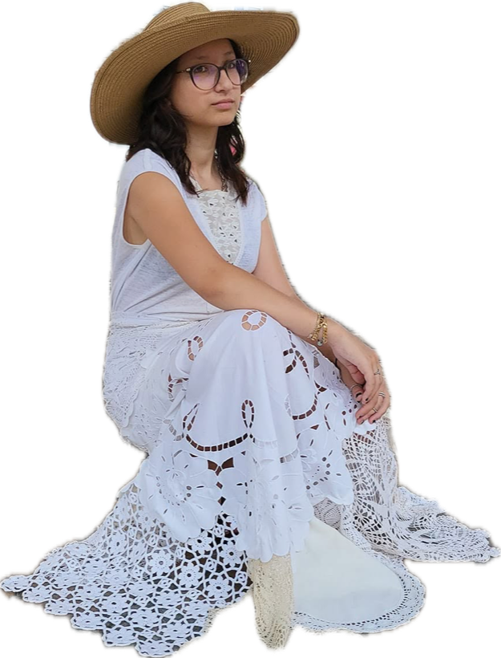
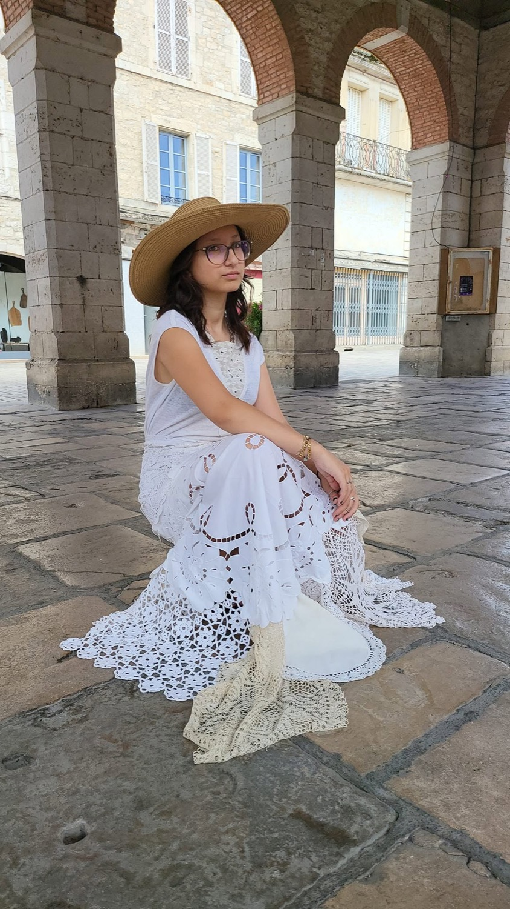
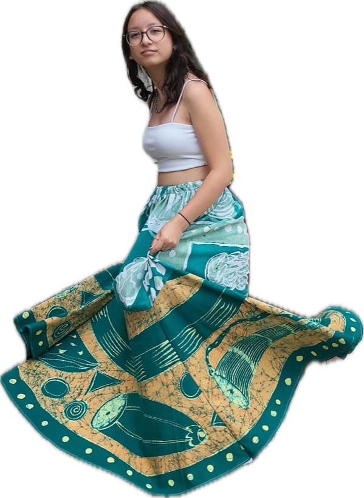
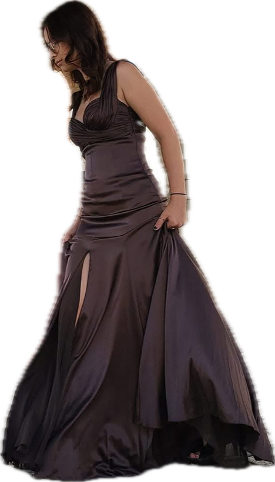
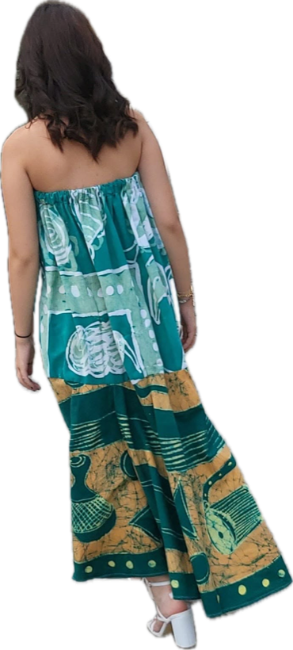
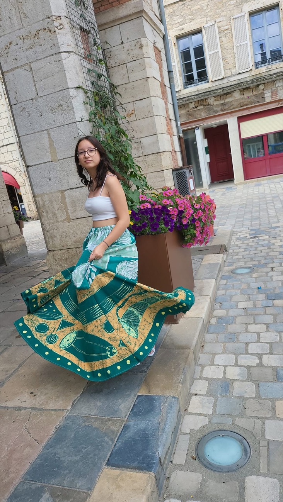
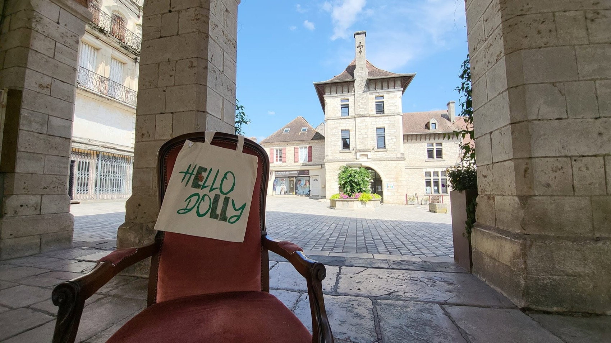

01 Voir la pièceAtelier de couture & boutique — Gramat, Lot
Des pièces uniques, cousues main sous la halle.
Dolly a dessiné la mode à Paris. Elle coud aujourd'hui place de la Halle, à Gramat : ses créations, le dépôt-vente, la laine, les tissus — et vos retouches.
Chaque pièce est unique Retrait en boutique ou expédition

Robe de dentelles — atelier Hello Dolly
Cousu sur place
Les créations sortent de l'atelier, au fond de la boutique.
Une seule de chaque
Dépôt-vente et créations : la pièce part, elle ne revient pas.
Essayage ou colis
À retirer sous la halle, ou expédié chez vous.
La boutique
Les pièces du moment

02 Voir la pièceJupe cercle, soie imprimée vert et or
Soie, doublée · Taille unique, taille élastiquée
145 € Pièce unique

03 Voir la pièce
05 Voir la pièceDe nouvelles pièces entrent chaque semaine
Les dépôts arrivent au fil des jours. Ce qui est en ligne est en boutique, et ce qui part de la boutique disparaît d'ici le soir.
Voir toute la boutiqueL'atelier de retouche
Un ourlet, une fermeture, une robe à reprendre.
Déposez votre vêtement à la boutique, ou passez un coup de fil avant de venir. Dolly vous dit tout de suite ce qui est possible et sous combien de temps.
- Ourlets et reprises
- Fermetures éclair
- Élargir, rétrécir
- Rideaux et voilages
- Housses de couette
- Housses de canapé et de chaises


L'atelier
De Paris à la place de la Halle
Dolly a été créatrice de mode à Paris. Elle s'est installée dans le Lot, puis a ouvert Hello Dolly au 2 place de la Halle, à l'emplacement de l'ancienne épicerie bio.
On y trouve ses créations et le dépôt-vente, mais aussi la laine, les tissus au mètre, et le travail des artisans d'art du causse : poteries, bois tourné, vannerie, savons, couteaux, broderie.
On entre pour un ourlet. On repart avec une pièce que personne d'autre n'aura. Hello Dolly — place de la Halle, Gramat
Dans la boutique
Il n'y a pas que les vêtements
Les nouvelles pièces
Elles partent vite
Il n'y a qu'un exemplaire de chaque. Laissez votre adresse : vous recevrez les nouvelles pièces le jour où elles arrivent en boutique, pas trois semaines après.
Une lettre quand il y a du nouveau, jamais plus. Désinscription en un clic.
Venir à la boutique
| Lundi | Fermé |
|---|---|
| Mardi | 10 h 30 – 12 h 30 · 14 h 30 – 18 h 30 |
| Mercredi | 10 h 30 – 12 h 30 · 14 h 30 – 18 h 30 |
| Jeudi | 10 h 30 – 12 h 30 · 14 h 30 – 18 h 30 |
| Vendredi | 10 h 30 – 12 h 30 · 14 h 30 – 18 h 30 |
| Samedi | 10 h 30 – 12 h 30 · 14 h 30 – 18 h 30 |
| Dimanche | Fermé |
-
2, place de la Halle
46500 Gramat Sous les arcades, en plein centre - 06 73 01 06 99 Pour une retouche, appelez avant de passer
- dmonpounga@gmail.com